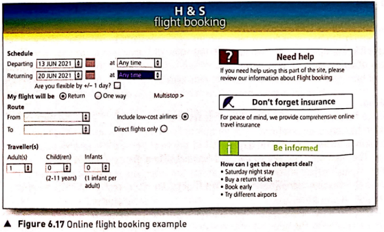
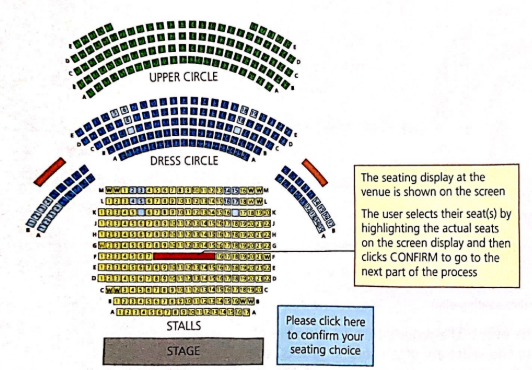
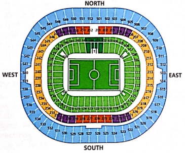

Booking systems
Online booking systems rely on the ability to update files immediately,
thus preventing double-booking, which could happen if the system response
time was slow.
Online booking systems are used in:
- the travel industry
- for concerts (theatre and music events)
- for cinema tickets
- when booking sporting events.
Before we start looking at specific examples, it is worth considering some of
the advantages and disadvantages of using online booking systems.
Advantages
- They prevent double-booking.
- The customer gets immediate feedback on the availability of seats and
whether or not their booking has been successful.
- The customer can make bookings at any time of the day.
- The customer's email allows the booking company to connect 'special offers'
to their email and inform them of such offers automatically.
- It is usually easier to browse the seating plans (particularly on flights) to choose
the best seats available at the price.
- It is possible to 'reserve' a seat for a period of time this allows a customer to 'make up
their mind' before finalising the booking of the seat (this was difficult to do with the
older paper-based systems).
- Very often there are no printed tickets, which saves postal costs and also allows
'impulse' bookings only a few hours in advance.
- Online booking allows the use of modern smartphone and tablet Apps technology;
the customer is sent a QR code which contains all the booking information
necessary (this QR code is stored on the smartphone or tablet and only needs to
be scanned at, for example, the theatre or airport on arrival).
Disadvantages
- The setting up and maintenance of online booking systems is expensive.
- All customers using this service need access to a computer or mobile
phone and a reliable internet connection.
- It is often more difficult to cancel the booking and get your money back
using online systems.
- If the server is down for maintenance, or if the systems breaks down,
it becomes impossible to book seats by any method (temporary paper-based
systems cannot be used in case of the risk of double-booking occurring).
- If the websites are not well designed, it can be difficult to make
exactly the booking you want or can lead you to make mistakes; this is a
particular issue with flight bookings where correcting an error can cost
the customer an additional fee.
- Booking online does not allow you to build a personal relationship with
a travel agent who might offer free upgrades or special offers which may
not be available to online bookings.
The travel industry
As an example, we will consider booking a flight online. A form similar to the one shown
in Figure 6.17 would appear on the screen. The user only needs to fill in the appropriate
fields and the system will automatically search for available flights, make bookings and
transfer the funds from their bank account. Unless something goes wrong, there will be no
need to talk to a human operator at any stage of the booking process.

Events such as concerts, theatres and cinemas
We will now consider the online booking system when trying to book a concert, theatre
or cinema performance. Because all three examples involve booking seats inside a
building fitted with seats, we will use the same booking system for all three. With
the example chosen, we have assumed that the customer has already logged on to the
events booking website (and the event is a music concert at a seated venue).

- The customer clicks on the performance they wish to see.
- A date and time is typed in.
- The required number of seats is also entered.
- The seating display at the venue is shown on the screen.
- The user selects their seat(s) by highlighting the actual seats on the
screen display and then clicks CONFIRM to go to the next part of the process.
- The database is then searched to check the availability of the selected seats.
- If the seats are available, the total price is shown plus the seat
numbers; this shows on another screen on the web page.
- If the customer is happy with this, they select CONFIRM on the screen.
- The seats are now temporarily held and set by the system as NO LONGER
AVAILABLE - this stops anyone else from booking them.
- The customer then enters their personal details or indicates
that they are a returning customer (in which case the website being
used will already have their details).
- Payment method is then selected and payment made.
- The theatre seats are then booked in the customer's name.
- The final details are again shown on the screen.
- An email is sent to the customer which may contain a QR code
which contains all their booking details (this acts as their e-ticket);
the QR code is then scanned at the venue.
- The database is finally updated with the booking transaction and
the seats are permanently confirmed as no longer available.
Booking sporting events
Booking a sporting event is very similar to the example above. Again, depending
on the event, the online booking system will show a seating plan.

The customer will need to select the event, the required day(s), number of
people and preferred seats. Because the seats are often sold in blocks, the
database will be searched to see if there are any seats available on the chosen
date. Available seats will not show on the booking map, which is different to
the concert/cinema booking system. If there is availability, the customer will
be offered seats in the block. If the customer is happy with the option, they
simply confirm the booking and payment is made online. Confirmation will be sent
via email and/or possibly a QR code, which can be downloaded to the customer's
smartphone; this QR code will act as their event ticket(s). Some sporting events
do not book seats (such as a golf tournament) in which case the booking will simply
be entry to the event.
The advantages and disadvantages of booking sports events online are the same as for
online booking of concert and cinema tickets.
One additional feature often offered with sporting events, is the ability to also
book flights and hotels if the event takes place overseas.